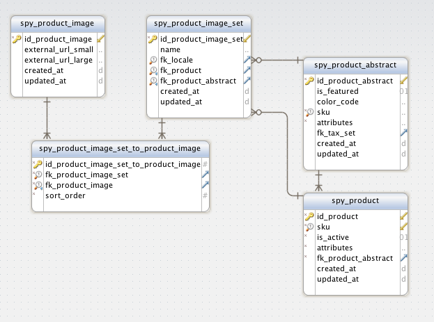
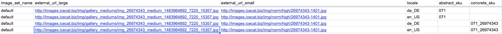
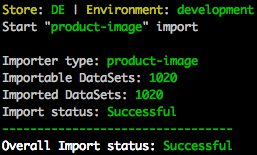

HowTo - Add a New DataImport Type
The following article describes with a real life example for importing product images how to build your own DataImport for a specific type.
The Database Schema
You should start by looking at the database tables you want to fill with data. The image below shows the table relation for product images.

When you look at this schema you can easily identify the needed data columns for your import file. Currently we only support CSV as format for file imports out of the box. You can easily create your own file reader if you want to use a different format.
The relevant fields to fill are:
- name (spy_product_image_set)
- external_url_large (spy_product_image)
- external_url_small (spy_product_image)
- fk_locale (spy_product_image_set)
- fk_product (spy_product_image_set)
- fk_product_abstract (spy_product_image_set)
All fk_* fields are foreign keys to other database tables. We can not know the id's of the related entities so we need to fill in those fields with a unique identifier.
For the database field fk_locale we will use the name of the locale for which we need the id e.g. de_DE. This value will then be used later to fetch the id for the given locale name.
We will use the same technique for the fk_product and fk_product_abstract fields.
Create an Import File
As already said, we only support CSV out of the box, so we will create a CSV file in our preferred editor.
Your CSV file should contain the following header columns:
- image_set_name
- external_url_large
- external_url_small
- locale
- concrete_sku
- abstract_sku
You will now have a CSV file similar to this one:

Now you can start to fill in some data into the new file. You should start with only a couple of entries to check after the first import run if all needed data is imported.
Save the new file under data/import/*.
Configure the DataImporter
Every import type needs its own DataImporterConfiguration. Open the DataImportConfig class and add a constant for the import type and a method to get the configuration within your DataImportBusinessFactory.
The constant is used to identify an import type. More information about it will follow later in this article. In our case we will use const IMPORT_TYPE_PRODUCT_IMAGE = 'product-image';
We also need a new method to get the configuration.
Copy the following code block into your DataImportConfig class.
/**
* @return \Generated\Shared\Transfer\DataImporterConfigurationTransfer
*/
public function getProductImageDataImporterConfiguration()
{
return $this->buildImporterConfiguration('product_image.csv', static::IMPORT_TYPE_PRODUCT_IMAGE);
}
Create a Writer Step
Steps
Each importer needs at least one step to write the data from the file to a database. You can add as much steps as you need to your DataSetStepBroker.
First we will create a new class called ProductImageWriterStep in "*/Zed/DataImport/Business/Model/ProductImage/" with this content:
<?php
namespace Pyz\Zed\DataImport\Business\Model\ProductImage;
use Spryker\Zed\DataImport\Business\Model\DataImportStep\DataImportStepInterface;
use Spryker\Zed\DataImport\Business\Model\DataSet\DataSetInterface;
class ProductImageWriterStep implements DataImportStepInterface
{
const BULK_SIZE = 100;
/**
* @param \Spryker\Zed\DataImport\Business\Model\DataSet\DataSetInterface $dataSet
*
* @return void
*/
public function execute(DataSetInterface $dataSet)
{
echo var_dump($dataSet) . PHP_EOL . 'Line: ' . __LINE__ . PHP_EOL . 'File: ' . __FILE__ . die();
}
}
Wire up the DataImporter
We now have everything at hand to wire up the new DataImport and run it.
DataImportBusinessFactory
In our DataImportBusinessFactory we add the following method:
/**
* @return \Spryker\Zed\DataImport\Business\Model\DataImporterInterface|\Spryker\Zed\DataImport\Business\Model\DataSet\DataSetStepBrokerAwareInterface
*/
protected function createProductImageImporter()
{
$dataImporter = $this->getCsvDataImporterFromConfig($this->getConfig()->getProductImageDataImporterConfiguration());
$dataSetStepBroker = $this->createTransactionAwareDataSetStepBroker(ProductImageWriterStep::BULK_SIZE);
$dataSetStepBroker
->addStep(new ProductImageWriterStep());
$dataImporter->addDataSetStepBroker($dataSetStepBroker);
return $dataImporter;
}
In the DataImportBusinessFactory::getImporter() we now add the new DataImporter with $dataImporterCollection->addDataImporter($this->createProductImageImporter()).
ConsoleDependencyProvider
To be able to execute the command from the console we need to register a new console command in the ConsoleDependencyProvider
The DataImport module brings a generic console command which can be used several times to add a console command for each data import type. You only need to register it as follows:
/**
* @param \Spryker\Zed\Kernel\Container $container
*
* @return \Symfony\Component\Console\Command\Command[]
*/
public function getConsoleCommands(Container $container)
{
$commands = [
new DataImportConsole(),
...
new DataImportConsole(DataImportConsole::DEFAULT_NAME . ':' . DataImportConfig::IMPORT_TYPE_PRODUCT_IMAGE),
...
];
}
You will now have a new console command data:import:product-image available. When you run vendor/bin/console you will see a new entry "data:import:product-image This command executes your "product-image" importer." under data.
Execute the DataImporter
As already mentioned, the DataImport module brings a generic command which can be used several times. You need to at least register it once without a constructor argument.
This command will execute all the registered DataImporter in the DataImportBusinessFactory one after the other.
As you already made it in the example above, you can add it with a new name over and over again. This brings in the ability to execute only one specific data importer.
When you now execute vendor/bin/console data:import:product-image you will see the debug output from the ProductImageWriterStep.
There are a lot options you can set for an import. If you need to debug one specific line of an import file, you can use offset and limit like this vendor/bin/console data:import:product-image -o 43 -l 1. This will then only execute the data set at potion 43 of your import file.
The DataImporter catches exceptions by default and continues to import data. In development mode you can use the throw-exception option to throw the occurred exception instead of catching it. There are a couple more options, you can see them when you execute vendor/bin/console data:import:product-image -h, the console command will then print the help page for the given command.
Finalize the Data Importer
We have proven that the data importer can be executed but we only print a debug message right now. We need to do some additional things to really save some data.
Convert Logical Identifier to Foreign Keys
As described above, we can not use foreign keys in our import file - we need to use logical identifier which can now be used to get the foreign key of a related entity. There are several ways to achieve what we need. We could add a new Step e.g. LocaleNameToIdLocaleStep or the better way in our case is to use a Repository which provides us with a getter to retrieve the id_locale by it's name.
LocaleRepository
We will add now a LocaleRepository to get the foreign key of a locale by its name.
<?php
namespace Pyz\Zed\DataImport\Business\Model\Locale\Repository;
use Orm\Zed\Locale\Persistence\Map\SpyLocaleTableMap;
use Orm\Zed\Locale\Persistence\SpyLocaleQuery;
class LocaleRepository
{
/**
* @var array
*/
protected static $localeMap;
/**
* @param string $locale
*
* @return int
*/
public function getIdLocaleByLocale($locale)
{
if (!static::$localeMap) {
$this->loadLocaleMap();
}
return static::$localeMap[$locale];
}
/**
* @return void
*/
private function loadLocaleMap()
{
$localeCollection = SpyLocaleQuery::create()
->select([SpyLocaleTableMap::COL_ID_LOCALE, SpyLocaleTableMap::COL_LOCALE_NAME])
->find();
foreach ($localeCollection as $locale) {
static::$localeMap[$locale[SpyLocaleTableMap::COL_LOCALE_NAME]] = $locale[SpyLocaleTableMap::COL_ID_LOCALE];
}
}
}
This Repository is very simple but does what we need right now.
Add the Repository
We need to change our ProductImageWriterStep to make use of it. Add the following code:
/**
* @var \Pyz\Zed\DataImport\Business\Model\Locale\Repository\LocaleRepositoryInterface
*/
protected $localeRepository;
/**
* @param \Pyz\Zed\DataImport\Business\Model\Locale\Repository\LocaleRepositoryInterface $localeRepository
*/
public function __construct(LocaleRepositoryInterface $localeRepository)
{
$this->localeRepository = $localeRepository;
}
Now we need to inject this new Repository into our ProductImageWriterStep inside of the business factory. When this is done we can use it like this: $idLocale = $this->localeRepository->getIdLocaleByLocale($dataSet[static::KEY_LOCALE]);
We need to add a similar Repository to retrieve the id of an abstract or concrete product by its sku. This is then also added to our ProductImageWriterStep as already done with the LocaleRepository.
Find or Create Entities
We will now create the spy_product_image_set, spy_product_image, spy_product_image_set_to_product_image and entities.
With the first run of an importer all entities are new and we need to do an insert. When the importer is executed more than once, it does updates of the existing entities. To do this, we use Propel's findOrCreate() method.
/**
* @param \Spryker\Zed\DataImport\Business\Model\DataSet\DataSetInterface $dataSet
*
* @return \Orm\Zed\ProductImage\Persistence\SpyProductImageSet
*/
protected function findOrCreateImageSet(DataSetInterface $dataSet)
{
$idLocale = $this->getIdLocaleByLocale($dataSet);
$query = SpyProductImageSetQuery::create()
->filterByName($dataSet[static::KEY_IMAGE_SET_NAME])
->filterByFkLocale($idLocale);
if (!empty($dataSet[static::KEY_ABSTRACT_SKU])) {
$idProductAbstract = $this->productRepository->getIdProductAbstractByAbstractSku($dataSet[static::KEY_ABSTRACT_SKU]);
$query->filterByFkProductAbstract($idProductAbstract);
}
if (!empty($dataSet[static::KEY_CONCRETE_SKU])) {
$idProduct = $this->productRepository->getIdProductByConcreteSku($dataSet[static::KEY_CONCRETE_SKU]);
$query->filterByFkProduct($idProduct);
}
$productImageSetEntity = $query->findOneOrCreate();
if ($productImageSetEntity->isNew() || $productImageSetEntity->isModified()) {
$productImageSetEntity->save();
}
return $productImageSetEntity;
}
/**
* @param \Spryker\Zed\DataImport\Business\Model\DataSet\DataSetInterface $dataSet
*
* @return int
*/
protected function getIdLocaleByLocale(DataSetInterface $dataSet)
{
$idLocale = null;
if (!empty($dataSet[static::KEY_LOCALE])) {
$idLocale = $this->localeRepository->getIdLocaleByLocale($dataSet[static::KEY_LOCALE]);
}
return $idLocale;
}
We want to allow the fk_locale to be null. One of fk_product or fk_product_abstract must be set. For performance reasons we only save the entity when it's new or modified.
ProductImageWriterStep:
/**
* We expect that the large URL is the unique identifier for an image.
*
* @param \Spryker\Zed\DataImport\Business\Model\DataSet\DataSetInterface $dataSet
*
* @return \Orm\Zed\ProductImage\Persistence\SpyProductImage
*/
protected function findOrCreateImage(DataSetInterface $dataSet)
{
$productImageEntity = SpyProductImageQuery::create()
->filterByExternalUrlLarge($dataSet[static::KEY_EXTERNAL_URL_LARGE])
->findOneOrCreate();
$productImageEntity
->setExternalUrlSmall($dataSet[static::KEY_EXTERNAL_URL_SMALL]);
if ($productImageEntity->isNew() || $productImageEntity->isModified()) {
$productImageEntity->save();
}
return $productImageEntity;
}
/**
* @param \Orm\Zed\ProductImage\Persistence\SpyProductImageSet $imageSetEntity
* @param \Orm\Zed\ProductImage\Persistence\SpyProductImage $productImageEntity
*
* @return void
*/
protected function updateOrCreateImageToImageSetRelation(SpyProductImageSet $imageSetEntity, SpyProductImage $productImageEntity)
{
$productImageSetToProductImageEntity = SpyProductImageSetToProductImageQuery::create()
->filterByFkProductImageSet($imageSetEntity->getIdProductImageSet())
->filterByFkProductImage($productImageEntity->getIdProductImage())
->findOneOrCreate();
$productImageSetToProductImageEntity
->setSortOrder(0);
if ($productImageSetToProductImageEntity->isNew() || $productImageSetToProductImageEntity->isModified()) {
$productImageSetToProductImageEntity->save();
}
}
Fill the Execute Method
/**
* @param \Spryker\Zed\DataImport\Business\Model\DataSet\DataSetInterface $dataSet
*
* @return void
*/
public function execute(DataSetInterface $dataSet)
{
$imageSetEntity = $this->findOrCreateImageSet($dataSet);
$productImageEntity = $this->findOrCreateImage($dataSet);
$this->updateOrCreateImageToImageSetRelation($imageSetEntity, $productImageEntity);
}
Run the Importer
When you now run the console command vendor/bin/console data:import:product-image, you will see an output similar to this one:
